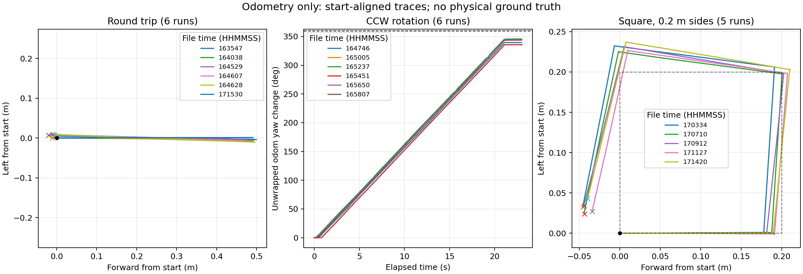
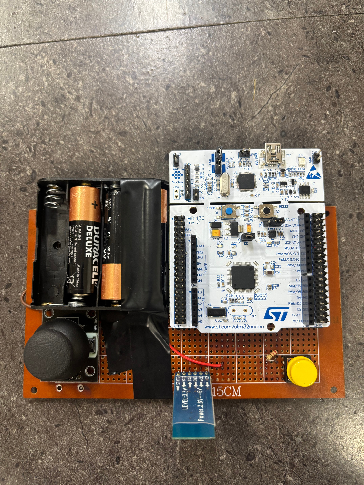

ROBOTICS & EMBEDDED SOFTWARE
박희연
로봇의 주행부터 센서 입력, 제어까지 연결하는 개발자
01 / LOGISTICS AMR 진행 중
물류센터 다중 AMR 시스템
TurtleBot3의 물류 구역 주행과 로봇팔 작업 지점 접근을 위한 주행 환경 구성
담당 · ROS2 주행 환경 / 위치 추정 / 정밀 접근
로봇별 좌표계와 명령 흐름을 연결했습니다.
- 다중 로봇 환경Gazebo에 TurtleBot3 3대를 배치하고, 로봇별 namespace와 TF 접두사를 적용해 센서·명령 토픽을 분리했습니다.
- Nav2 주행 연결AMCL 초기 위치 설정으로 지도와 로봇의 TF 연결을 정리하고, cmd_vel 메시지 타입·전달 흐름을 수정해 RViz 목표 지점 주행을 확인했습니다.
- Route Graph 구성물류 구역의 이동 경로를 노드·엣지로 구성하고, Route Server 기반 주행 연결을 진행하고 있습니다.
스킬 & 사용 프로그램
프로젝트 코드 ↗- 언어 · 개발 기술
- Python · ROS2
Nav2 · AMCL · TF - 사용 프로그램
- Gazebo
RViz - 로봇 · 구현 환경
- TurtleBot3 3대
Gazebo 시뮬레이션
01 / LOGISTICS AMR · ENGINEERING
주행 오차를 확인하고, 작업 지점 정렬로
Nav2로 작업 구역에 접근한 뒤, ArUco 마커를 기준으로 로봇팔 바로 앞 위치와 방향을 맞추는 흐름
로봇팔 작업 구역까지 이동
마커 기준 상대 위치·방향 확인
로봇팔 앞 작업 위치 도달
Next step · 정밀 접근
장거리 이동과 마지막 정렬을 나눠 설계했습니다.
Nav2로 작업 구역까지 이동한 뒤, 로봇팔 앞의 ArUco 마커를 기준으로 위치와 방향을 맞추는 구조입니다. 현재 카메라 연동과 마커 인식을 구현하고 있습니다.
검증 · 오도메트리 반복 실험
눈으로 본 궤적을 로그 수치와 비교했습니다.
왕복·회전·사각형 주행의 시작점과 종료점을 비교했습니다. 회전이 포함된 경로에서 방향 차이가 반복되는 것을 확인하고, 실제 위치를 기준으로 한 추가 검증 필요성을 정리했습니다.

다음 단계: 3대 동시 주행 · 장애물 회피 후 복귀 · 로봇팔 앞 정렬
2026.09 기준02 / ON-DEVICE AI · SAFE EYE
산업 현장 보호구 착용 감지
객체 탐지와 다중 라벨 분류를 비교할 수 있도록 학습·평가 데이터를 구성했습니다.
담당 · 데이터 전처리 / 평가 데이터 구성
탐지용 데이터를 사람 단위 분류 데이터로 변환했습니다.
- 사람별 크롭과 라벨 자동화약 22,000장의 원본을 대상으로 사람 검출·크롭, PPE 라벨 매칭, CSV 저장 과정을 연결했습니다.
- 오염·충돌 데이터 제거다른 사람이 섞인 크롭과 저해상도 이미지를 걸러내고, 서로 반대되는 착용 라벨이 함께 매칭되는 사례를 제거했습니다.
- 클래스 불균형 대응데이터가 적은 조끼만 착용(01)·모두 미착용(00) 상태는 가용 샘플을 모두 유지하고, 다수 상태는 최대 1,000장으로 샘플링했습니다. 학습·검증·테스트를 70:15:15로 분할했습니다.
전처리 대상 원본 이미지(약)
- 01사람 검출·크롭
원본 이미지에서 사람 단위 이미지 생성
- 02겹침·품질 필터
Containment Ratio, 저해상도 크롭 확인
- 03PPE 라벨 귀속
헬멧·조끼 착용 여부를 이진 라벨로 변환
- 04충돌 제거·CSV 저장
헬멧·조끼 순서의 2자리 코드(1=착용, 0=미착용)로 관리
인원수와 착용 상태를 고려해 독립 평가용 원본 100장을 선별하고, 이 원본에서 파생된 크롭을 학습 데이터에서 격리했습니다.
스킬 & 사용 프로그램
프로젝트 코드 ↗- 언어 · 데이터 처리
- Python · 데이터 전처리
다중 라벨 분류 · 평가셋 구성 - 모델 · 실행 기술
- YOLO · MobileNetV3
TFLite - 대상 장치 · 통합 화면
- Raspberry Pi 5
Safe Eye 대시보드
02 / ON-DEVICE AI · INTEGRATION
비교 실험을 실제 판정 흐름에 반영
인원수에 따라 판정 방식을 전환하고, 카메라·모델·모니터링 화면을 통합했습니다.
담당 · 시스템 통합 / 프론트엔드 위젯
1명은 MLC, 2명 이상은 OD로 분기합니다.
- 하이브리드 PPE 판정1인 환경에서는 MobileNetV3 분류를, 다인원에서는 객체 탐지를 적용했습니다. 사람 수만큼 추론이 반복되는 분류 방식의 속도 저하를 고려했습니다.
- Safe Eye 대시보드웹캠·YOLO·MobileNetV3 결과를 연결해 감지 인원, 보호구 위반, 위험 구역 상태와 FPS를 한 화면에서 확인하도록 구성했습니다.
- 모듈 단위 통합config·camera·detector를 분리하고, 팀원이 만든 모델과 기능을 같은 입력·출력 흐름으로 연결했습니다.
| 환경 | 헬멧 OD | 헬멧 MLC | 조끼 OD | 조끼 MLC | FPS (PC) | 채택 |
|---|---|---|---|---|---|---|
| 1인 n=588 | 92.6% | 91.6% | 79.6% | 90.8% | MLC 3.48 / OD 3.70 | MLC |
| 3인 이상 n=889 | 92.8% | 89.6% | 73.6% | 77.8% | MLC 1.92 / OD 3.70 | OD |
1인 환경에서는 조끼 정확도가 MLC 90.8%로 OD보다 11.2%p 높고 속도 차이는 작았습니다. 3인 이상에서는 조끼 정확도 차이가 4.2%p로 줄어든 반면 MLC 속도가 절반으로 떨어져, 실시간성을 위해 OD를 선택했습니다.
팀 시스템: PPE·위험 구역 감지 / 대상 장치: Raspberry Pi 5 / YOLO · MobileNetV3 · TFLite
개인 기여: 데이터·통합·UI03 / STM32 · EMBEDDED CONTROL
센서와 상태 표시를 연결한 RC카
STM32F411RE 기반 무선 RC카 팀 프로젝트에서 IMU·초음파·조도 센서와 LED 제어를 담당했습니다.
담당 · 센서 입력 / 장애물 감지 / LED 자동 제어
센서값을 주행 조건과 상태 출력으로 연결했습니다.
- 초음파 장애물 감지HC-SR04의 Echo 펄스를 타이머 Input Capture로 측정했습니다. 10 cm 이내 장애물을 감지하면 전진 목표 RPM을 0으로 제한하고 후진·회전은 허용했습니다.
- IMU 기울기 입력ADXL345의 가속도 값을 I2C로 읽어 차체 기울기를 감지하고, 기울기 상태를 LCD에 표시했습니다.
- 조도 기반 LED 제어주변 밝기에 따라 LED를 자동으로 제어하는 기능을 구현했습니다.
스킬 & 사용 프로그램
프로젝트 코드 ↗- 언어 · 제어 기술
- C · HAL · I2C
Input Capture · ADC - 사용 프로그램
- STM32CubeMX
- 보드 · 센서
- STM32F411RE · ADXL345
HC-SR04 · 조도 센서 · LED
03 / STM32 · SYSTEM INTEGRATION
주행 제어와 센서 처리 주기를 분리
센서 기능을 팀의 무선 조종·모터 제어 파이프라인에 통합하고 실물 시연으로 동작을 확인했습니다.
통합 구조 · 팀 공동 결과
1 ms 타이머를 기준으로 작업을 나눴습니다.
| 주기 | 처리 내용 |
|---|---|
| 10 ms | 목표 RPM · 장애물 조건 · 엔코더 · 모터 제어 |
| 50 ms | 패킷 확인 · IMU 읽기 · LCD 상태 갱신 |
| 100 ms | 초음파 트리거 |
타이머 인터럽트에서 플래그를 설정하고 메인 루프에서 처리하는 구조로 센서 읽기와 표시·통신 주기를 분리했습니다.
무선 조이스틱 입력부터 모터 제어까지 연결하고, 10 cm 장애물 정지·500 ms 통신 단절 정지·IMU 연동 LCD 표시를 실물 주행으로 시연했습니다.
팀 통합 과정에서 확인한 문제
코드와 배선을 구분해 원인을 좁혔습니다.
- 센서·모터 결합 후 오동작기존 코드와 비교하고 개별 동작을 확인한 뒤, 납땜과 연결 오류를 수정해 정상 동작을 확인했습니다.
- 하드웨어 인터페이스 검증통신 응답뿐 아니라 실제 센서값·출력 동작을 함께 확인하며, 여러 주변장치를 연결할 때 물리적 배선 검토가 중요하다는 점을 배웠습니다.

범위: 센서·주행·상태 표시 통합
4인 팀 프로젝트04 / PLC · MINI PROJECT
자동화 설비 HMI와 서보 기본 제어
운용 화면을 설계하고, 조작 입력과 PLC 제어·상태 정보를 연결했습니다.
담당 · HMI 화면 설계 / 기본 기능 구현
조작과 상태 확인이 가능한 화면을 구성했습니다.
- HMI 3개 화면 설계메인·서보 컨트롤·환경 컨트롤로 구분하고, 한·영 전환과 위치·속도·에러 상태 표시를 구성했습니다.
- 서보 기본 동작 연결원점 복귀, 위치 지정, JOG 이동·속도 변경, 에러 리셋, 동작 시작과 비상정지·해제 기능을 구현했습니다.
- 통합 오류 해결HMI 태그 연결 오류를 수정하고, JOG 버튼 미입력 시에도 속도값이 인가되던 문제에 비동작 조건을 추가했습니다.
2인 팀 프로젝트 · 창고 층 선택, Tact Time 계산과 적재 램프 응용 로직은 팀원 담당
스킬 & 사용 프로그램
2인 팀 프로젝트- 제어 · 화면 설계
- HMI 설계 · 서보 기본 제어
태그 연동 · Ethernet - 사용 프로그램
- GX Works2
GT Designer3 - PLC · 서보 장치
- Mitsubishi Q03UDV
MR-J4